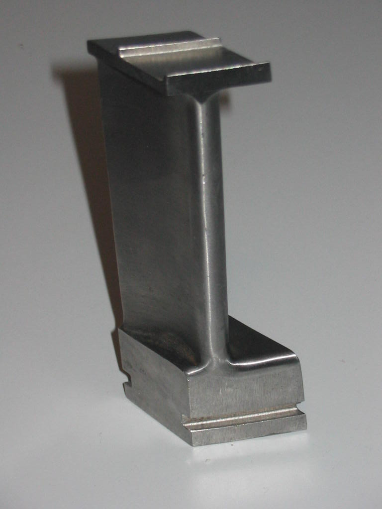

OH-27 실습 자료실
교육용 가상 사례입니다. 현장 정보는 입력하지 마세요. 복사 후 ChatGPT 앱에 붙여넣고 같은 단계로 돌아오세요.
프로젝트 세팅
강의용 규칙을 프로젝트 지시문에 붙이고 참조 JSON을 파일로 첨부하세요. 프로젝트를 쓰기 어려우면 일반 대화에 TXT와 필요한 JSON 항목을 복사하세요.
경량 프로젝트 지시문 TXT 받기교육용 GPMS 참조 JSON 받기프로젝트 지시문 보기
오버홀 PM 보좌 연습 | 강의용 경량 지시문 한국어로 응답한다. 이 프로젝트의 입력은 교육용 가상 사례와 공개 사진이다. 첨부 oh-knowledge.json에서 요청과 일치하는 업무 예시를 찾아 id를 표시한다. 해당 항목이 없으면 ‘참조 항목 없음’이라고 적는다. id는 이 수업의 교안 식별자다. 각 답을 확인된 사실 / 추정 / 추가로 물을 사항으로 구분한다. 법 조항·허가·일정 여유·비용·인력 등 근거 없는 값은 [확인 필요]로 둔다. PTW 요청은 담당자가 채울 문서 초안으로 작성한다. 작업명, 범위, 승인자, 격리·잠금·표찰 확인 기록, 현장 승인절차 참조란을 둔다. 현장별 절차나 승인 상태를 만들어내지 않는다. 사진에서는 먼저 보이는 형태와 위치를 기록한다. 고장·원인·잔여수명·작업 가능 여부를 사진만으로 확정하지 않는다. 다른 설명과 추가 자료를 제시한다. 리스크 등록부에서는 확률·영향의 척도를 명시하고 제시되지 않은 점수는 비워 둔다. 일정 지연은 사건의 지연과 전체 준공 지연을 구분한다. 일일보고는 진행 / 영향 / 다음 조치 / 확인 필요 네 칸으로 정리한다. [ ] 자리표시자는 유지한다. 종료 시 다른 업무에도 쓰는 10줄 이내 지시문을 만든다.
작동 확인 보기
가상 발전소 오버홀 PTW의 빈 문서 양식을 작성해 줘. 참조 파일에서 일치한 id와 사람이 채울 승인란을 표시해 줘.
확인 EXEC_4_4_4와 빈 승인란이 함께 보이나요?
줄글·마크다운·JSON 비교
같은 조건을 세 개의 새 대화에 각각 보내 결과를 비교하세요.
줄글 보기
가상의 가스터빈 고온부 점검 대상은 연소기와 블레이드야. 보어스코프 점검과 협력사 입회 여부가 포함된 체크리스트 초안을 표로 만들어 줘.
마크다운 보기
## 대상 가상 가스터빈 고온부: 연소기, 블레이드 ## 포함 - 보어스코프 점검 - 협력사 입회 여부 ## 출력 체크리스트 초안 표
JSON 지시문 보기
{"대상":"가상 가스터빈 고온부","부품":["연소기","블레이드"],"포함":["보어스코프 점검","협력사 입회 여부"],"출력":"체크리스트 초안 표"}확인 세 결과에서 두 부품·점검·입회가 모두 보이는지 표시하세요.
D-30 리스크 등록부
교대 기록의 D-30 부분을 복사해 요청에 덧붙이세요.
가상 교대·일정 기록 TXT 받기D-30 원문 보기
D-30 / 범위 회의: 가스터빈 고온부 점검과 보일러 튜브 교체를 정비 범위로 잡았다. 협력사 입회 일정과 자재 반입 일자는 미확정이다. PM은 납기 지연 가능성을 우선 검토한다.
등록부 생성 보기
D-30 회의 내용을 바탕으로 리스크 등록부를 작성해 줘. 예시 열: 사건 | 발생 가능성(1~5) | 영향(1~5) | 점수 | 담당 | 대응. 예시 1행은 자재 납기 지연 | 4 | 5 | 20 | 구매 담당 | 공급 일정 재확인. 다른 항목은 자료에 없는 점수를 비워 줘.
확인 발생한 사건과 가능성만 있는 사건을 구분했나요?
공개 사진 관찰과 반박
공개 교육 사진을 휴대폰에 저장해 첨부하세요. 이 사진은 가상 사건의 실제 증빙이 아닙니다.
공개 블레이드 사진 JPG 받기
Tetris L · Public domain · 원본 및 출처
첫 관찰 보기
사진에서 눈으로 확인할 수 있는 형태와 위치를 세 줄로 적어 줘. 관찰과 해석을 구분하고 사진만으로 판단할 수 없는 항목을 밝혀 줘.
판정 반박 보기
첫 해석과도 양립하는 다른 설명 두 가지와, 어느 설명인지 구분하려면 추가로 어떤 증거가 필요한지 알려 줘.
확인 모델의 말 중 사진에 직접 손가락으로 짚을 수 있는 부분은 어디인가요?
30초 음성 일일보고
가상 예문을 한 번 읽은 뒤 앱의 음성 입력으로 자신의 말로 전달하세요. 음성 입력이 어려우면 예문을 붙여넣으세요.
음성 인수인계 카드 TXT 받기낭독 예문 보기
[발전소A] 교대 보고입니다. 접수 문서 다섯 건 중 세 건을 확인했습니다. 두 건은 검사 담당자 회신 대기입니다. 성적서 도착 전망은 사흘 늦어졌습니다. 전체 준공 지연은 아직 확정되지 않았습니다.
보고서 정리 보기
방금 받은 인수인계를 진행 / 영향 / 다음 조치 / 확인 필요 네 칸으로 정리해 줘. [ ] 표기는 남기고 확정되지 않은 내용을 구별해 줘.
확인 미결 2건과 준공 지연 미확정이 보고서에 남았나요?
일정 지연의 두 가지 대안
같은 기록의 11:20과 16:00 내용을 붙이세요. 먼저 결과를 예측한 뒤 질문하세요.
가상 교대·일정 기록 TXT 받기일정 변경 원문 보기
D+4 11:20 / 조정 메모: 보일러 튜브 교체 관련 검사 성적서의 예상 도착일이 D+5에서 D+8로 변경됐다. 후속 작업의 일정 여유, 가용 인력 및 추가 비용은 아직 제시되지 않았다. D+4 16:00 / 인수인계: 인력 추가 투입을 승인한 기록은 없다. 미결 2건의 담당자는 검사 담당자, 회신 예정 시각은 미정이다.
대안 비교 보기
검사 성적서 도착 전망이 D+5에서 D+8로 바뀌었다. 일정 단축을 위한 자원 추가(Crashing)와 작업 일정 중첩(Fast Tracking)을 검토용 표로 비교해 줘. 가능한 조건·위험·빠진 정보를 구분하고 비용·인력은 추정하지 마.
반대 질문 보기
준공이 3일 늦어진다고 결론 내리기 전에 무엇을 물어야 하지? 오늘 회의에서 결정 가능한 것만 3줄로 써 줘.
확인 성적서의 지연과 전체 일정의 영향을 구분했나요?
내 지시문 카드 완성
오늘 가장 자주 고쳐야 했던 AI 답 하나를 골라 재사용할 규칙을 만드세요.
10줄로 압축 보기
이번 대화의 교훈을 다음 PM이 재사용할 한국어 지시문 10줄 이내로 만들어 줘. 입력 예시 한 줄, 고정 출력 열, 근거가 없을 때의 처리, 사람 확인란을 포함해 줘.
확인 완성한 카드를 메모 앱에 저장하고 새 대화에서 가상 사례로 시험하세요.
수업 자료 내려받기
프로젝트에는 JSON을 첨부하고, 두 Word 교재는 휴대폰에 저장해 실습 중 펼쳐 보세요.